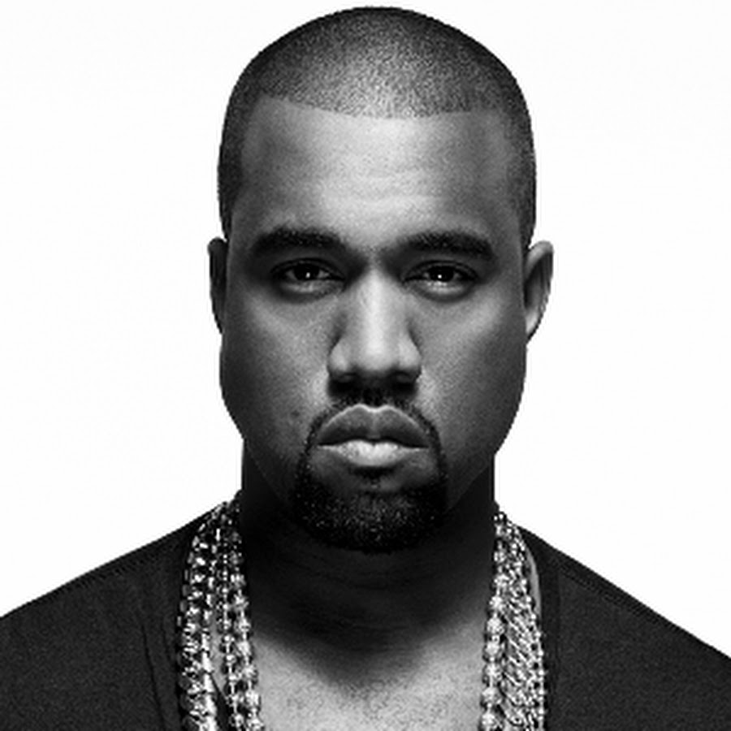

INTRO
I miss the old Kanye, straight from the 'Go Kanye
Chop up the soul Kanye, set on his goals Kanye
I hate the new Kanye, the bad mood Kanye
The always rude Kanye, spaz in the news Kanye
I miss the sweet Kanye, chop up the beats Kanye
I gotta to say at that time I'd like to meet Kanye
See I invented Kanye, it wasn't any Kanyes
And now I look and look around and there's so many Kanyes
I used to love Kanye, I used to love Kanye
I even had the pink polo, I thought I was Kanye
What if Kanye made a song about Kanye
Called "I Miss The Old Kanye, " man that would be so Kanye
That's all it was Kanye, we still love Kanye
And I love you like Kanye loves Kanye
WIKIPEDIA
KANYE WEST
LIVED
QUOTE
"How Sway."